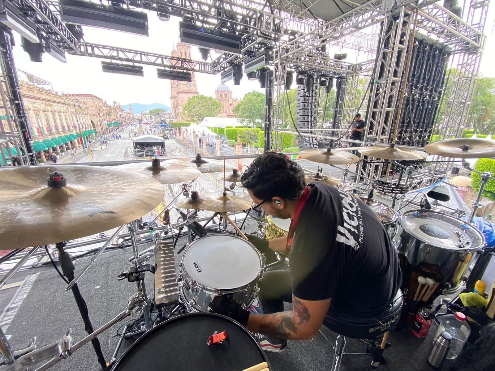

ACERCA DE MÍ
Músico mexicano nacido en Mexicali y egresado de la Licenciatura de Música Contemporánea. Con una sólida trayectoria en giras nacionales e internacionales, me especializo en ofrecer un performance rítmico preciso y versátil para una gran variedad de estilos musicales, aportando profesionalismo y energía a cada proyecto.
MI TRABAJO
Videos de mi trabajo en vivo y en el estudio, y una playlist con grabaciones en las que he participado.
Showreel 2025
Discografía de Sesión
EXPERIENCIA PROFESIONAL
He tenido el privilegio de colaborar con artistas y festivales de primer nivel, tanto en el escenario como detrás de él.
Créditos como Músico
Fármacos
BateristaSimpson Ahuevo
BateristaDavid J (Bauhaus)
BateristaRoy Z (Judas Priest)
BateristaCamiseta 22
BateristaBlack Oil
BateristaCréditos como Técnico de Giras
Alejandra Guzmán
Drum TechLittle Jesus
Drum TechRuzzi
Stage ManagerPolyphia
Stage HandAnthrax
Stage HandLas Ligas Menores
Ing. MonitoresGALERÍA
Momentos en el escenario y en el estudio.



CONTACTO
¿Listo para colaborar o necesitas un baterista para tu próximo proyecto? Contáctame.